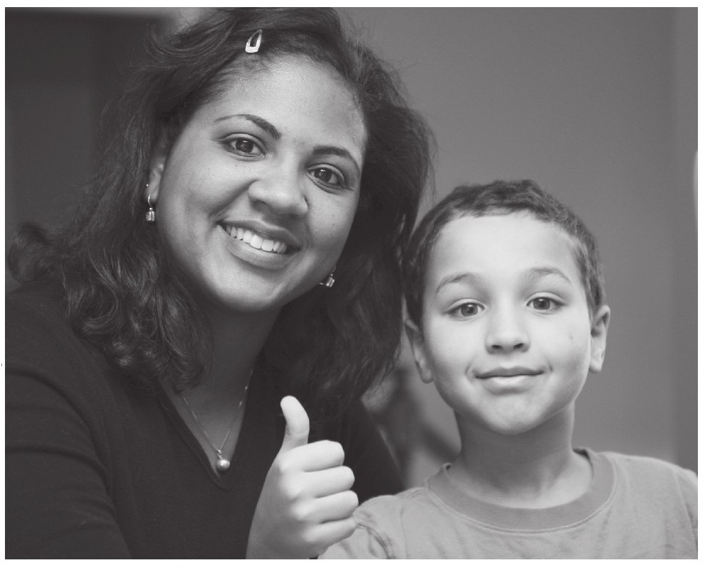
许多数学家的自传中提及的重大发现和方法创新引人入胜，但是我却恰恰被其中的另外一点事实震撼，那就是他们中许多人对于数学产生兴趣并非开始于学校教育，而是在家庭环境的影响下，从发现有趣的数学问题或数学猜想而开始的。当然，可以说我自己也是其中的一员。我之所以有机会开启人生伟大的数学之旅，是因为在自己小的时候，妈妈经常出一些有趣味性的题目让我尝试去做，并给予我相应指导。在多年以后，也就是我16岁的时候，我有幸得到了一位伟大数学老师的鼓舞，她经常鼓励学生讨论数学，这让我获得了比之前更加深入了解数学的机会。
在这里我们需要注意的是，不要低估这种家庭式的非正规教育还有各种趣味题、益智游戏等活动对于孩子数学启蒙的重要性。对孩子来讲，这种趣味题还有其他小题目，要比课堂上那种标准简洁式的数学问答题更为重要。我们从Flannery的人生经历中发现了这样的一个事实，那就是在她还是个孩子的时候，她就已经开始接触各式各样的数学谜题了。而这些童年时的经历，对于她数学生涯的意义及影响，要远比她后来在学校所学到的知识重要。在这一章中，我将介绍部分模式的数学趣味题型以及有助于孩子数学教育启蒙的一些有效方法，从而更有益于孩子的未来成长。
所有学龄前的孩子都可能对数学抱有一定兴趣，而家长的鼓励恰恰可以成为他们主动思考的最佳动力。数学中的理论其实在生活中有着很直观的展现，比如说像这样一个显而易见的事实：你可以找一堆形状各异的小物件放在一起，让孩子数一数它们的数量。将这些小物件打乱后再计数，很显然它们的总数是不变的。而这样的一种游戏通常会吸引小孩子的注意力，激发他们的兴趣。如果你将积木交给任意年龄段的孩子玩耍，你需要做的就是默默地注视着他们的一举一动，你会发现孩子们围绕积木所开展的一切活动都会和数学有关系。比如挑选出积木，将它们组合成任意形状，然后将其拆解再组装等等。在这个时候家长应该去赞赏孩子，鼓励他们自主思考，并让他们勇敢尝试更多其他挑战。其实家长培养孩子对数学学习感兴趣最好的方式，就是提供一种数学熏陶的环境，最好是和孩子一起去探寻数学中的各式概念和思想。
有许多辅导书籍都为孩子提供了值得尝试的经典数学趣味题。但是就我个人角度而言，最好的教育方式不在于让孩子去做那些所谓“超水平”的数学题，或者去买一些数学相关方面的书籍让他们来阅读。我们的培养目标是让孩子自主地形成数学思维，并学会去提问题，鼓励孩子将他们的想法付诸实践。[书籍免费分享微信jnztxy]
令人高兴的是，数学这门学科可以很容易地融入一些很有意思的兴趣启蒙活动之中。我的学生Nick，在数学课堂上对学生采用了多种数学启蒙方法。下面的照片中就展示了其中的部分方法，他鼓励学生动手操作这些趣味玩具，以发现其中隐藏的数学趣味问题，不论年龄、家庭背景甚至是以前对数学课不抱好感的学生，都可以借助此方法打开对数学的探索之门。其中的一些趣味问题甚至可以引申出让人耳目一新的问题。
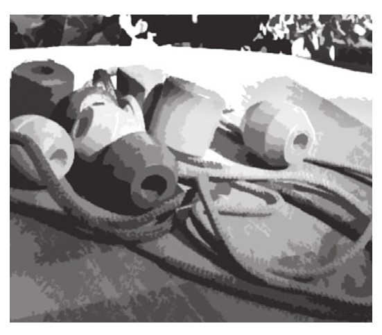
1.各种形状的彩色珠子和绳子
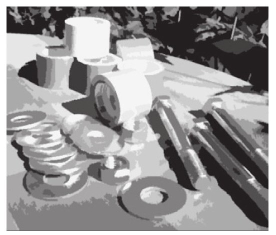
2.螺母、螺栓、垫圈及各色胶带
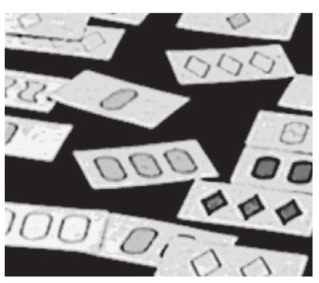
3.神奇形色牌
Fiori用课堂的实际行动告诉我们，这种教学模式有助于学生的数学学习，而且还为学校的课堂教学改革做出了很好的典范，至少对于某些特定年龄段学生的学习来说，这种形式的课堂教学可以起到一定帮助[1]。我对Fiori的做法十分赞同，不过我却认为应该鼓励各年龄段学生的家长在家中都采用这样的培养模式。
如果孩子在很小的时候就接触积木游戏，那么他们很有可能日后在学校会取得不错的数学成绩，这项游戏是未来学好数学的关键因素之一[2]。的确如此，男孩相比于女孩可能会有更多的机会去接触积木游戏，这也就间接导致了空间想象能力在性别方面产生差异，而这一能力对孩子日后的数学学习会产生很大的影响。任何样式的建筑积木、拼接方块或者是一套可拆分组装的模型，都对开发孩子的空间想象力大有益处，空间想象力是培养基础数学能力的组成部分。
除了组装积木以外，还有其他一些可以激发空间想象力的玩具，比如益智拼图、七巧板、魔方等。其实只要涉及物体的旋转、移动、组合的玩具都会有这样的促进功能。如果想去体验数学之美，并非只有实物操作这种形式。在我们日常生活中出现的任何图形或数字的排列组合都隐藏着数学的身影。如果你带着孩子到外面走一走，你会很快发现身边各种各样的事物都可能与数学有着千丝万缕的联系，从门牌号码到邮政编码，数学简直无所不在。如果你在工作中足够有创意的话，你会发现和数学有关的讨论话题随时都可在你身边出现，当然假如我们自己留意的话，工作中那些数学相关的部分一定会成为未来我们所关注的焦点。
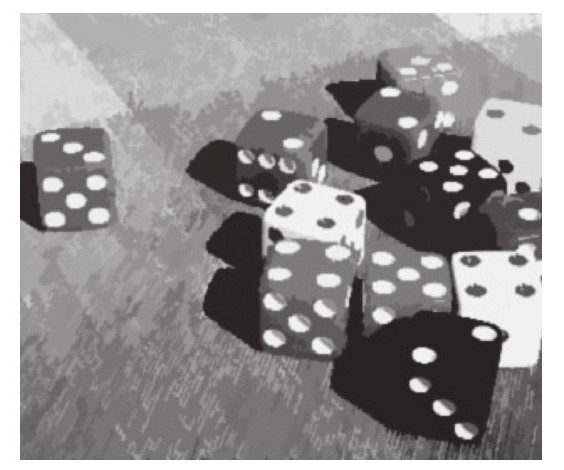
1.各种颜色的色子
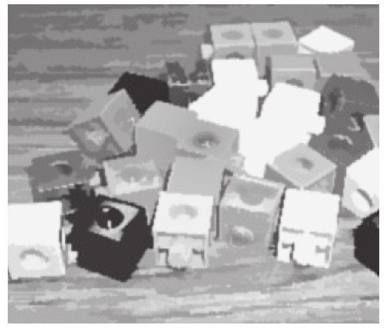
2.各种颜色的拼接方块
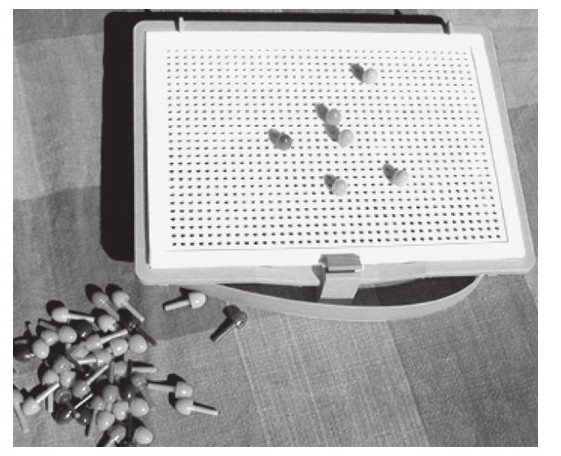
3.方形隔板插槽和许多彩色螺栓
哈佛大学的教育学专家Eleanor DucKworth在她的论文《创造奇妙的想法》[3]指出：“对于孩子来讲，最有价值的学习经历就是他们在自主学习过程中所形成的那些观点和思想。”在文中她提到了一段她与一帮7岁的孩子共同学习的经历：她让这些孩子将10根吸管剪成不同的长度，并按照从短到长的顺序排列。在DucKworth还没有具体说明这项任务时，Kevin就走过来告诉她：“我已经知道自己应该去怎么做了。”随后他拿起吸管开始做起手工。在DucKworth看来，Kevin的意思并不是“我知道你接下来要让我做什么”，而是“对于这些吸管我有个更好的点子，你就等着大吃一惊吧”。DucKworth还记得Kevin当时一丝不苟地做着手工并且乐在其中的情景，对于Kevin来讲，这种教学活动非常有意义，因为他完全可以按照自己的想法去行动，而不是被动地听取别人的指引。
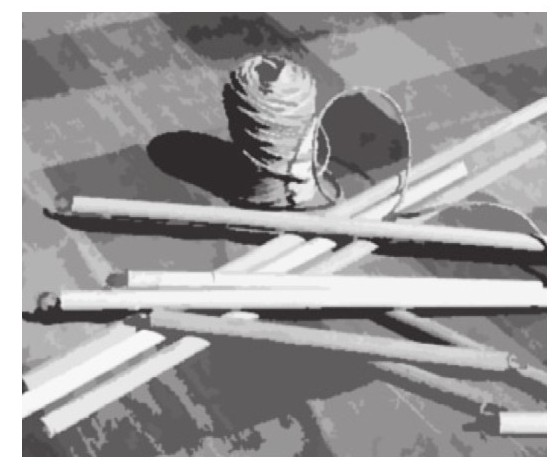
1.不同长度带有小孔的棍子和绳子
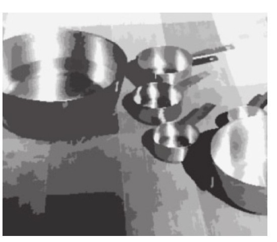
2.单一刻度的量杯和一碗水
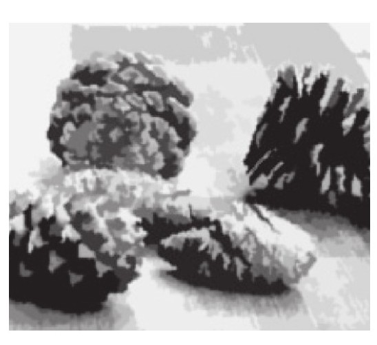
3.不同形状和大小的松果
有关研究结果表明：当孩子们能够以自己的意志去工作学习时，他们在做事时不仅会更加积极主动，还会竭尽全力来达成目标。[4][5][6]DucKworth认为，智力开发的本质就是在头脑中形成一套非常完备的思想理论体系，而家长或老师所能做的最具针对性的教育就是，为帮助孩子培养这种思想而创造良好的外部条件。所有家长都应在孩子成长过程中有意识地去培养他们，无论是对数学还是对其他学科而言都同样适用，而家长们最应该去做的就是充分激发孩子对数学的积极性。并且类似数学这样的学科还需要家长付出一些额外的努力，由于学校教育使孩子们误以为所有的数学思想、理论及概念已经是亘古不变了，而他们所需要做的仅仅是学习、记忆[7][8]，这就让家长纠正孩子关于数学错误观点的任务显得更加艰巨了。
除了为孩子提供这种培养兴趣的环境以外，另一种有助于培养孩子数学思维的方法就是让他们尝试着去接触一些趣味题和思考题。Flannery写了一本有趣的书叫作《解码：一段奇妙的数学之旅》[9]，书中她讲述了自己是如何培养数学学习兴趣的。我并不认为只有家长具备像Flannery父亲那样成为数学教授的实力才能把孩子培养成才，其实他们只要陪孩子学习数学就可以了。Flannery认为自己的数学水平之所以提高，是因为她经常在家中做一些趣味题与思考题。虽然她和弟弟更喜欢户外运动，但是她父亲每晚都会让他们做一些有意思的数学题来激发他们在数学方面的好奇心。因为她父亲是位数学教授，另外她自己的数学水平一直也很不错，人们不禁要想她父亲在家中会不会给予她数学方面的一些额外帮助，但是Flannery却在书中告诉读者实际情况并非如此，她在书中写道：
Flannery在书中列举了许多在她小时候曾接触过的趣味数学题，这对她之后在数学方面取得的造诣奠定了良好基础。下面我列举三道比较经典的题目：
水缸问题
给你一个5升的水缸，一个3升的水缸，还有无限量的水，你如何才能准确计量出4升水？
兔子问题
一只兔子掉入深度为30米的枯井中。它决定靠自己的力量爬出枯井。当它开始向上爬的时候，它发现每当自己向上爬3米的时候，就会向下滑落2米（听起来确实运气不够好）。令人遗憾的是，它这一天就只能停留在自己滑落后的地方，等第二天再爬。那么按照这样的情况，它从井底到爬出井口需要用多长时间？
和尚爬山问题
一天早晨，在太阳刚刚升起的时候，一位和尚离开了自己的寺庙去攀登一座高山。山路崎岖狭窄，台阶不足1米宽。在崎岖的山路上面可以瞥见山顶。和尚以不同的行进速度向上攀爬，偶尔会停下来休息，吃一些自带的脱水食物，他最终在日落之前到达了山顶。在经过了几天的斋戒之后，他决定沿着原路返回，依然是从日出时出发，以不同的行进速度向山下走，中途会时不时停下来休息，最后在日落前到达了自己的寺庙。现在需要证明，这位和尚在往返行程中在同一时点通过了某处的同一地点。[11]
Flannery谈到这些趣味题开启了她的数学人生之路，因为这些题目教会了她如何去思考和推理，这两大要素是学习数学必不可少的。当孩子面对这样的问题时，他们需要在头脑中描绘现实场景，运用数学模型并结合有关数据来解题，在这个过程中就考验了逻辑思维能力，这些过程对于数学学习至关重要。Flannery她说父亲在每天晚餐后都会给她和弟弟出一道类似的问题。我非常推崇这种教育形式，同样也非常钦佩家长在忙碌了一天之后还能在家中组织起这样的学习活动。当然家长的任务不仅仅是为孩子提供这样一些题目，他们还可以在每周、每月定期和孩子一起动手做题。这种趣味数学题对于孩子的数学学习很有帮助，如果孩子能和家长交流思考和推理过程就更好了。一旦孩子养成这种对问题逻辑分析的习惯，并且真正做到自主地解决各种问题，那么这些能力对于他们以后的学习和生活都将是一种宝贵的财富。
当年轻人在进行数学思考时，提问这种方式通常是他们找到问题突破口的一种有效办法。孩子经常是透过问题进行思考，这会帮助他们完善自己的思考过程。高质量的问题通常是进入孩子思维世界的一把钥匙，我们通过这把钥匙去了解孩子们的学习思路，从而帮助他们更好地成长。
当我将那些在数学课上遇到困难的学生叫到身边来时，问他们：“你知道自己应该去做什么吗？”如果他们说出了一些想法，我会继续问道：“那么你为什么会这样想呢？”或者“你怎样才能实现自己的想法呢？”通常，在面对这样的问题时，那些接受过传统数学教育的孩子会觉得自己的想法有错误并立即转变自己的观点。但是在经过多次像这样的交流后，这些孩子逐渐适应了我对于他们思考过程感兴趣的这种提问方式，因为不论是对是错，我都会去询问他们同样的问题。在学生们在阐述想法的过程中，通过这种形式的提问，我能够切实引导他们，使他们有更大的进步。同时也让他们体会到数学是如此有意思的一门学科，每个人都可以用自己独有的思考方式去解答数学问题。
Pat Kenschaft曾为家长专门写过一本针对孩子数学教育的书——《数学的力量——如何帮助你的孩子热爱数学学习，即使你并不喜欢数学》。索思摩学院的教授Heinrich Brinkmann的观点被收录其中。这位神奇的教授之所以如此闻名，是因为他能够从每位学生口述的问题中找出正确的解决方案。不论学生的来稿或者提问的方式有多么的粗鲁无礼，他依然会镇定地说道：“哦，我大概明白你的意思了，对于这个问题你好像是这样想的……”[12]
这其实是数学教学中极为重要的一方面，因为像这样的情况除非是孩子们来捣乱，不然他们肯定是针对问题有着自己的一套逻辑思路，而老师的任务就是去寻找并引导他们正确的解题思路。家长在课外时间可以通过询问和引导的方式让自己的孩子更好地学习数学，而在课堂上老师面对30多名甚至是更多的学生时，很难采用这样的教学模式。如果仅仅是告诉孩子们得出结果是错误的而不提供其他帮助的话，就很容易使他们沮丧，但是如果他们能够得到对自己思路的正面肯定，并鼓励他们在某方面还可以做得更好时，他们就会重拾信心，这对于他们以后的成长非常的重要。
应该鼓励孩子自主思考和相互讨论。我曾有幸与Carlos Cabana一起共事，他是一位极富创意灵感的老师。当有学生来求助时，他会鼓励学生将抽象疑问转化为具体的问题，然后大家一起讨论。其实学生在将抽象问题具体化的过程中，更容易发现问题的核心本质，随着这种模式的转换，学生之前的疑问也许就迎刃而解了！另外一位让我有幸与之共事的老师是Cathy Humphreys[13]，她经常说自己不会让学生去做那些有标准答案的数学题。她的意思是，她主要致力于帮助学生们掌握数学方法并且培养他们的思路，而这需要通过开放式的问题才可能达到目的。只有这种开放式的问题才具锻炼价值，因为这可以让老师有机会了解学生的解题思路。Kenschaft有句话说得很到位：“如果能够有机会了解你面前学生内心的真实想法，那么你就有可能解开他们的心结，让他们隐藏许久的数学潜能得以充分发挥。”[14]其实了解学生的数学思路，并且去发觉他们内在的数学潜能的理想方法，就是为他们创造条件并提供一些有意思的趣味题。这可以逐渐地让他们去自主探索、提出各种疑问，而我们需要做的就是鼓励他们去思考和推理。
当你和你的孩子一起做数学题时，要尽量保持自己的学习热情。当然如果你之前在学校有过不愉快的学习经历，那么这对于你来讲的确有些难，但是这种形式的活动对于孩子来讲却非常重要。家长们，尤其是有女儿的母亲们绝对不能而且也不应该说出“我对数学从不抱有任何希望”这样的话。很多事实已经证实，这句话会产生十分严重的后果，尤其是对于女孩子来讲[15]。
Kenschaft曾经讲过如何来愉快地学习数学，正如她所说：“你和孩子之间关于数学交流的话题要越有趣越好，尤其是在你的孩子年龄非常小的时候。如果想检查自己是否足够称职，其实非常简单，那就是去发现孩子是否会在学习中产生强烈的挫败感。你要用自己的方式来表明对孩子的足够信赖，比如一个微笑或是其他形式的鼓励。”[16]她所指出的关键一点就是，千万不能让家长在孩子的早期教育中表现出对数学的消极态度，即使那些对数学感到恐惧的家长也不能在孩子进入校门前就对数学抱有消极的心态。每一代人都有着一次全新的机会去了解认识数学，不要将你之前那种不愉快的学习经历转移到你孩子的身上。我知道有一些人当初在学校学习数学时受到各种挫折，而他们在工作后又重新和数学打了交道，随后会发现数学也没有自己当初想象的那么难，甚至还发现了其中的乐趣。低龄儿童的家长也可以将数学学习作为一项自己的计划，在与孩子们一起学习的过程中，也有可能在不经意间发现自己同样取得了进步。
有关数学的交流应该在一种放松且远离压力的氛围下进行。内心的恐惧和压力会对数学学习构成一定的阻碍，孩子们在分享自己的数学思想时应该感到非常的自在随意。当孩子们出现一些失误时，家长和老师们不应该产生急躁情绪或者急于去纠正他们的错误。相比于其他学科，数学给学生带来的挫败感会更加强烈一些，而这足以打击一个人的上进心[17]。每当我和孩子们一起学习时，我都会表示自己非常愿意面对解题出错这件事，因为这对于数学学习确实很有益处。我的意思是，孩子们能通过分析错误原因学到更多的知识，因为这些错误能够让他们去思考、去调整，从而学到新东西。当发现孩子解答错误时，我会让他们自己去思考，我把这个过程看作数学学习的重要机会。当学生发现我对于他们的失误并非严厉地指责而是采取包容的态度时，他们反而会更加积极地思考问题。
许多人通过研究专业领域内人士的相关方法，并且尝试着进行模仿，以便更容易接近他们的专业高度。当然数学也不例外，研究者们一次又一次地尝试从解题高手的策略中总结出纲领性方法。最能够得到普遍认可的纲领性解题方法出自匈牙利数学家Pólya。在1957年他写了本叫作《怎样解题》的参考书，其中就列举了解决数学问题的一般规律和程序[18]。Pólya认为当数学家在面对数学问题时，他们的首要工作就是去理解问题本身的含义。他们会向自己提出“这个问题涉及哪些领域？”“我应该从哪方面着手开展研究？”之类的问题。接下来，数学家会制定出一个详细的计划方案，在这个过程中，他们通常会采取一些关键方法，而这些方法往往被那些数学成绩不理想的学生忽视，如描述问题、使用数字图表、从简单问题入手。
比如：在下面的图形中有多少种方法将两个方块涂黑？
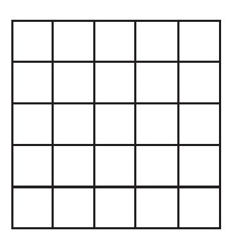
如果能够从图形中找出最基本的“图形单元”来研究的话，不失为一种好的选择：
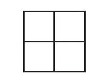
在下一步中，数学家们会针对这种最基本的“图形单元”开展自己的研究计划，并且做好检验方案。在数学家们得出相关结果之后，他们会将自己的答案加以验证，并确认是否合理。这些大体的解题策略对于读者来说显而易见，但是成绩不理想的学生却往往将其忽视，学生在解答数学题时容易冒进，迫不及待地想要带入数字进行运算，而并不去考虑问题到底是在考察什么[19]。成功的解题者通常会花更多的时间在问题本身上，认真思考为什么题目会如此设问，去做一些更为数学化的操作，比如去描述问题、绘制表格、列举特例等。而成绩不理想的学生往往不会去主动使用这些方法。
在学习数学时，我发现用自己的语言来描述问题的能力非常重要。无论何时，当我碰到了一个数学问题，比如Flannery的那三道例题（水缸问题、兔子问题、和尚爬山问题），我首先要做的就是将这些问题用自己的方式来加以描述。事实上如果我自己不这样做的话，就会在面对题目时感到十分的无助。这种方法不论对于我还是其他人来说，都是有助于认清问题内部关联性的最佳途径。当我和学校的孩子们在一起学习时，他们经常会拿数学问题向我求助，我一般会先让他们把自己对于问题的看法提炼出来。事实证明，孩子们都普遍表示这样的方法对他们的数学学习非常有帮助。
至于另外两条重要的解题方式：使用数字图表和从简单问题入手，我会以一种生动形象的方式在下文中做一个简短的介绍。
我借用“国际象棋的棋盘问题”来说明这两种解题方法。这道题目要求学生计算棋盘上共有多少个方格，当然我们知道答案肯定不是64个。其难点在于棋盘上有很多尺寸不一样的正方形格子。从尺寸最小的1×1方格到2×2方格，再到棋盘上尺寸最大的8×8方格，我们需要分别去找出不同尺寸的方格数量。
比如在下图中我们来看一看棋盘上尺寸大小为2×2以及4×4的方格：
在前面的章节中，我已经提到在暑期课程开课的第一天，在课堂上坐满了实力水平不一的六年级和七年级学生，我们向他们提出了这个问题，并且让他们说出自己的分析判断与思考方式，由此概括出任意尺寸棋盘方格总数的计算方法。这个问题富有挑战性的方面就在于计算方格的数量时要考虑方格的重叠现象。
因此学生们在计算方格数量时要非常认真，并且在做数据记录时要系统详细。在我们开始着手考虑这道题目时，会发现一种有趣的现象：当高水平的学生在考虑同样问题时，会将方格的尺寸大小作为解题的重要突破口。他们会在自己的题板上做出明确标记，以便于他们可以清楚地记录方格数量。比如Ella在图中标记尺寸为2×2方格的办法如下：
第一步，在每个尺寸为2×2的方格中心标记圆点。
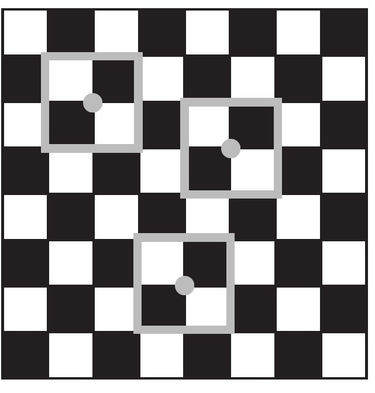
第二步，将所有尺寸为2×2的方格中心都逐一标记出来。
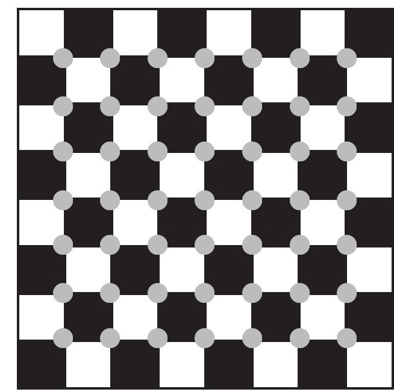
之后再将尺寸不同的方格数量全部记录在自己绘制的表格中，Ella的记录如下图所示：
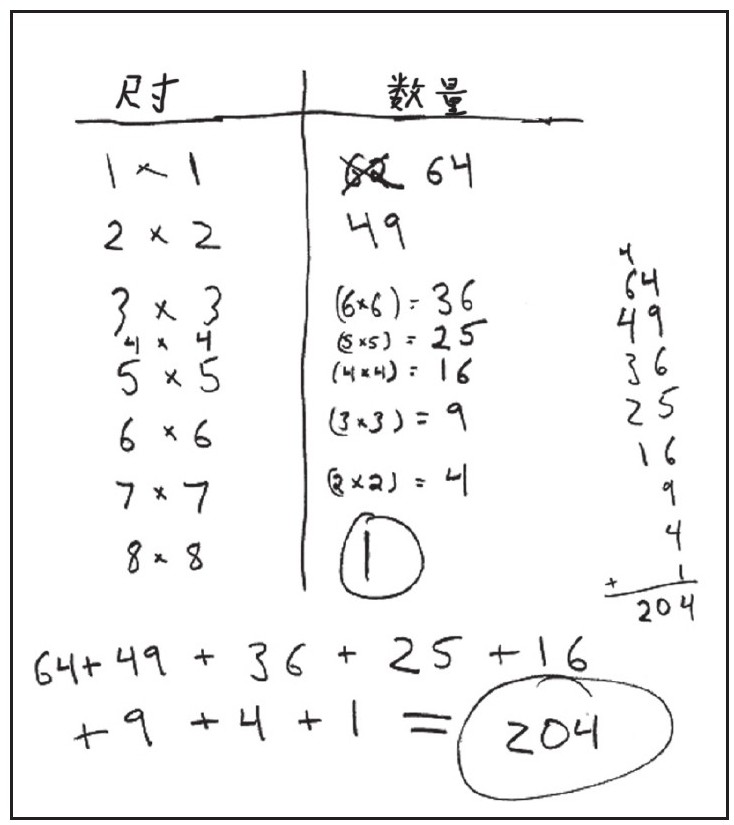
但是成绩差的学生的做法却完全不同。虽然他们也意识到需要确定尺寸不同的方格数量，不过他们在计算方格数量的过程中会显得毫无章法，这也不可避免地会产生遗漏。他们在没有理清自己思路或者制作记录表格的情况下就盲目地给出了自己的答案。随着课堂教学的逐步开展，影响低水平学生学习效率的主要问题逐渐显现出来，那就是，在他们的学习过程中，缺乏对问题系统思考和分类记录数据的能力。他们往往在刚开始接触问题时就没有对其加以仔细分析，同时也缺乏问题的分类归纳能力。因此他们通常只知道蛮干，尝试任何能想到的办法，最终在尝试无果时那种失败感自然不言而喻。
我们应该将主要的工作重心放在培养学生这方面的能力上面，教给他们如何绘制数字表格和相关图表，让他们学会系统地分析思考问题。有趣的是，当学生们能够更为认真地绘制表格与图表来辅助自己解题时，他们做题的成功率有了明显改善。
Pólya认为高水平学生在解题时采取的另一个主要方法就是：从简单问题入手。这通常也是水平较低的学生学习时所面临的一道屏障，而且这种情况要比我所想象的更严重。我们同样以棋盘问题来说明这种方法的重要性。当我们让学生针对尺寸为8×8的棋盘归纳特点时，我们的初衷就是引导学生们去发现棋盘中蕴含的某种内在规律。对于解题高手来讲，当他们在面对这样的问题时，会联想到先从最为简单的棋盘尺寸变化着手，就好比从2×2或3×3的方格尺寸，一点点去思考棋盘形式变化的规律。而那些水平较低的学生都不会去使用这样的方法。这些学生不仅不能自主地使用这些方法，当我们要求他们按照这种方法去做题时，他们也拒绝采纳这些方法。
在前面的章节中我谈到了灵活运用数字运算的重要性，也就是说，我们应该将数字运算看作一种拆分与组合的形式转换方法，这种灵活的思维模式在数学学习中几乎处处都能用到，当然上面所提到的问题也不例外。在经历了几周的暑期教学后，我们发现一些学生很难适应这种方法，这让我意识到这种方法对于他们来讲的确有些难度，因为这与他们潜意识中的“做题法则”相违背。
学生们在传统课堂教育中就是反复去做成套的数学练习题，而在暑期课程中，我们让他们在做题之前先试着将数学问题从一种模式转换为另一种模式。因此很多学生觉得这种方法怪异也就不足为奇了，因为他们之前从未接触过这种方法。但是如果不这样做的话，许多问题在解答时都会无从下手。在暑期课程几周的时间里，我们一直都在训练学生使用这种“从简单问题入手”的方法，学生们逐渐体会到灵活使用数学方法和数字的重要性，开始逐渐接受使用这些解题方法。
最近美国教育部召集了一批数学家和教育学家来商讨孩子未来数学教育的侧重点。专家小组都一致认为在数学教育工作所涉及的众多节点中，“数学实践”被认为是孩子们未来数学教育的重要方向。“数学实践”可以解释为：学习数学不仅限于纸面上写明的固定模式。这项活动的针对性就在于它能够将理论与实际相联系，使学生们具备将各类数学工具应用在学习和生活实践当中的能力。“实践”是指那些成功掌握并且熟练运用数学工具的人所做的一些与数学相关的实际活动，比如定理的推断证明、数学符号的表示及应用、能够从具体实例中总结归纳出一般化的方法等[20]。这样的训练虽然在数学课堂上经常被老师忽视，但却是让学生达到更高数学水平的必由之路。而且专家组一致认为，该项技能是高水平学生与低水平学生的分水岭。高水平学生可以熟练应用该方法应对数学学习，而低水平学生却对此望尘莫及。由此可见，解题模式与数学实践对于孩子们的数学教育至关重要。
让学生们学习这些方法策略的最佳途径就是为他们创造这种条件，比如说通过思考题和趣味题来引入这些方法。当然直接教给他们这些方法也不失为一种可行的方案，就像我在前面章节中所提到的，我们只能利用暑期课程这种简短集中的培训将这些方法传授给学生。教育研究专家Kil Lee将Pólya讲到的方法，在一组四年级学生中进行了短期的教学实验。在这次教学实验中，使用5课时的时间对学生们强调了这种数学方法的重要性，并且通过列举实例的方式来说明具体用法，然后再用5课时的时间鼓励学生们运用这些方法去解决实际问题。
当Lee将教学实验组的学生与对照组的学生进行对比研究后发现，那些经过这种方法训练的学生不会陷入题目中，不会随意去带入数字计算。他们更多的是去勾勒问题的轮廓，制作图表，从简单的问题特例入手。这大大增加了学生们在数学解题方面的成功概率，即使在教学培训的几周后，那些接受数学方法培训的学生要比那些未参加培训的学生在数学做题方面更加优异。研究结果表明，年龄尚小的四年级学生完全可以接受并理解这种重要的数学学习方法，并且在事实上也切实提高了他们的成绩水平。尤其是在像美国这种以传统教育为主的数学课堂上效果尤为明显。[21]
家长和老师的一项重要任务，就是让孩子尽量远离那些所谓数学法则中的条条框框，这我已经在前面的章节提到过了。Gray和Tall的研究[22]已经表明，成绩优异的学生能够成功灵活地使用数字，将它们根据自己的需要进行分拆与组合。这其实并不难，但是孩子们必须明确自己应该去做些什么。幸运的是，我们有一些实用的方法来鼓励各年龄段的孩子去灵活地使用数字。我所知道培养能力的最好方法，就是让他们练习“数字心算法”，这在前面的章节部分已经提过了。
“数字心算法”的教育目标就是培养学生去思考数字运算的多种组合方式，不论是拆分还是组合。例如，你让一个孩子在不使用纸笔的情况下心算：
17×5=？
这个问题看似很难，但是在将数字灵活拆分后，我们会发现问题变得简单。想要计算17×5，我可以先计算15×5。然后在我的头脑中就形成了思路：
10×5=50
5×5=25
50+25=75
接下来我需要做的就是在此结果的基础上再加10，这是因为我们只算出了15×5的结果，当然还需要计算那多出的2×5的结果。这样一来我们就得到了最终结果85。还有另外一种算法，当然并不是去直接计算17×5，而是先去计算：
17×10=170
然后计算其一半的数值。100的一半是50，70的一半是35，将两者相加就得到了85这个结果。
学生们开始用这种方式思考问题后，他们已经逐渐在自己的头脑中形成这种数学思维，可以灵活地运用数字。在我对孩子们提出像这样的问题时，我都会让他们去思考尽可能多的解题方法。孩子都会觉得这很有挑战性和趣味性。
这种心算练习的最大优势就在于它能够随意转换题目的难度水平，面对同样的一个问题，其解决方法通常是无穷无尽的，所以不论对于孩子还是大人来讲，这种训练都会十分有趣。下面是一些难度水平不一的计算题：
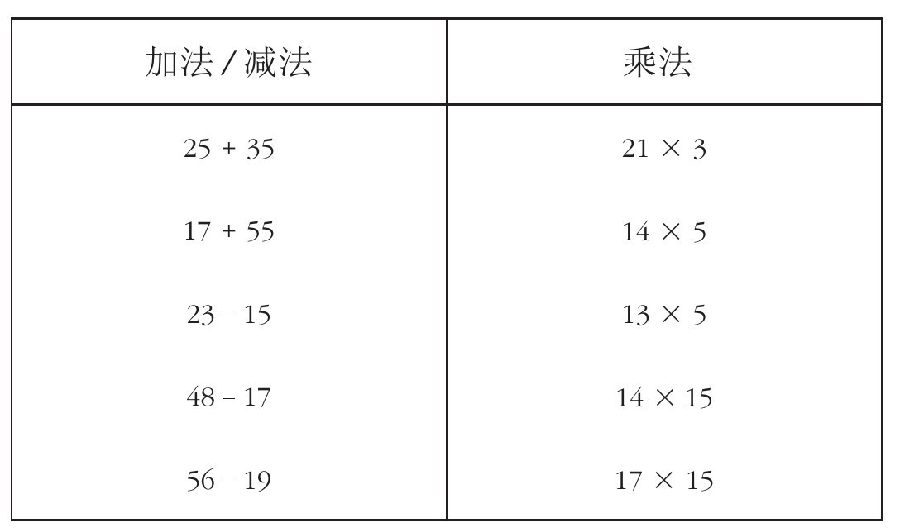
下面是你和孩子们在一起学习时，引导他们的示范性语句：
以上所介绍的就是关于数字运算的高效算法，对于任何年龄段的学生而言，拆分与组合的方法都极具价值。仅具备这种能力还不够，还需要学生们培养创造性的思维以及对数字的敏感性。这里就有个小小的测试题：
4个4的运算
尝试采用各种运算方式，利用4个4来得出0～20之间的数字（可以使用乘法、除法、加法、减法、乘方或者平方根运算），每个4只可以使用1次，例如：
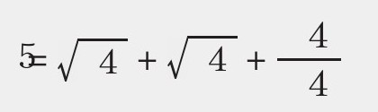
那么在0～20之间有多少数字满足这样的条件呢？
谁先到20
这是一个两人的游戏，规则是这样的：
1.从0开始；
2.1号选手在此基础上加1或2；
3.2号选手在1号选手得数的基础上加1或2；
4.两位选手交替加上1或2；
5.最先得到20的人就获得胜利。
现在来看一看你是否能想出一个获胜方案。
为立方体涂色问题
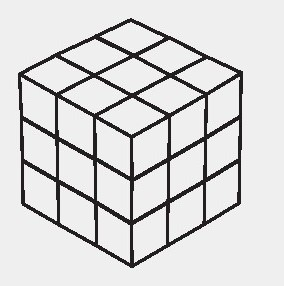
在一个边长为3的立方体外侧涂满红色。如果从中取出一个边长为1的立方体，那么总共有多少个立方体是三面都有颜色的？有多少个是两面都有颜色的？有多少个是单面有颜色的？又有多少个是全没有颜色的？如果给你一个尺寸更大的立方体，你又应该怎样去做呢？
豌豆和碗的问题
将10粒豌豆分配到3个碗中共有多少种方法？尝试在每个碗中放入的豌豆数量不相等。
数字分解问题
对于数字3，一共有4种分解方法来表示：
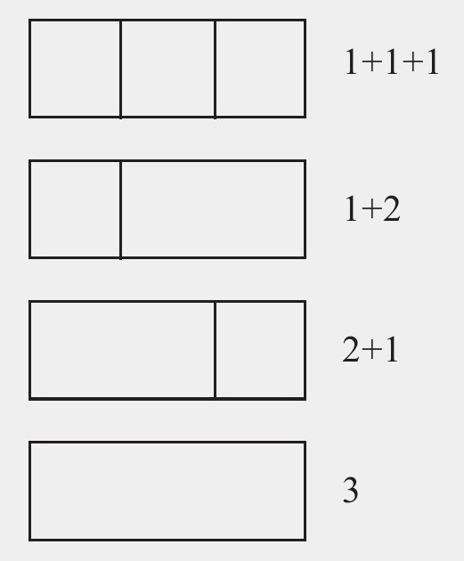
或者说你认为1+2和2+1是相同的，也就是说实际上有3种分解数字3的方法。
请说一说你自己不同的分解方法。
在前面我已经介绍了家长可以通过环境熏陶、趣味题还有一些辅助教学手段等方法，在家中或者课堂上来培养孩子的数学思维。对于家长来说，优秀的教学辅助资源，不只限于提示学生应该去学什么，或者要求他们去做什么样的练习题，更要为他们提供一些学习方法以及与课程相关的实践活动。
在家中和你的孩子一起进行数学学习，可以使孩子将来在学校或工作中能够更好地把握和运用数学知识。不过如果学校的课堂教学能够激发学生们的学习兴趣，并使他们热爱数学学习不就更好了吗？这需要家长积极地与教育机构和相关人士沟通，开启学校数学教育的新模式。